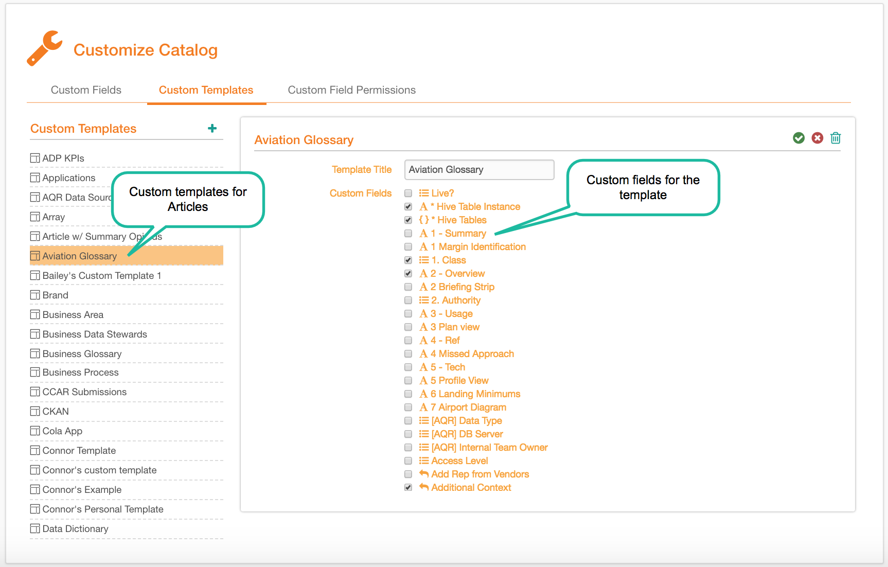
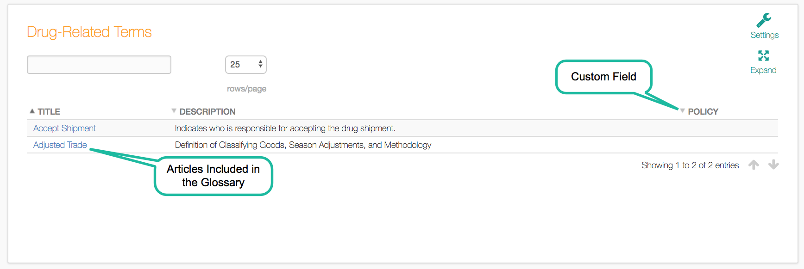
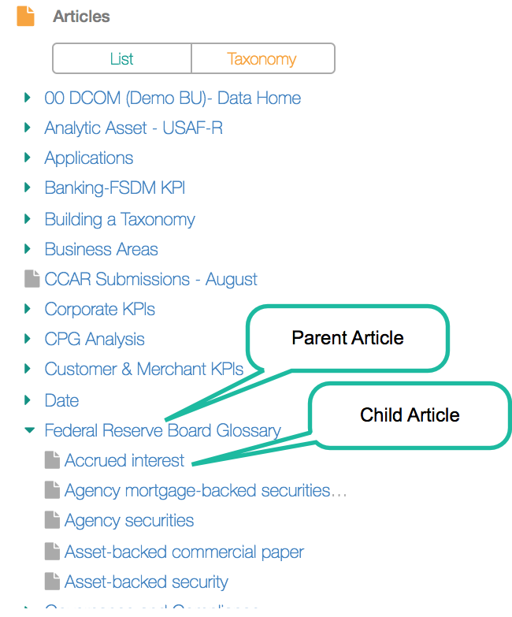
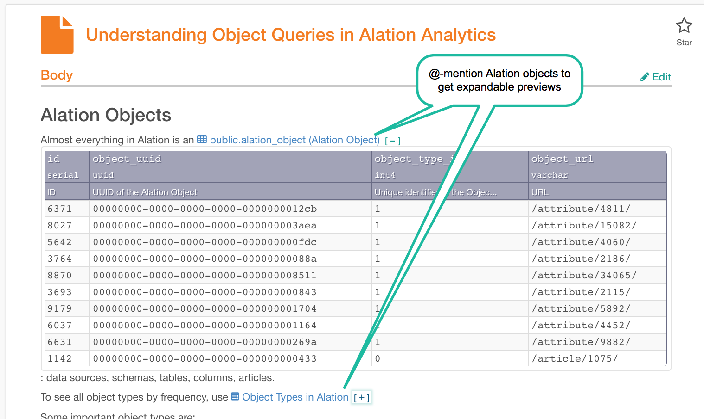

Write Articles to Retain Institutional Knowledge¶
Alation Cloud Service Applies to Alation Cloud Service instances of Alation
Customer Managed Applies to customer-managed instances of Alation
Articles are Alation’s method to house information that is broadly relevant for Alation users and a complement to catalog pages which hold information specific to a particular data object. Articles have free text fields that have ample space to describe a topic thoroughly, as well as custom fields that add discrete pieces of information, such as people, dates, or any other sort of classification. These custom fields provide additional content for articles while also helping to narrow searches for relevant articles.
Articles are important because they are a permanent, accessible, and searchable store of information about a company’s data. Unlike other legacy stores of information, articles are in the context of data, so users don’t have to switch applications to get the information they need. Also, the articles can be linked to data objects they are relevant to so that they are always current.
To learn more about how to create articles in Alation, see Working With Articles.
Some of the ways we have seen customers use articles:
Presenting the company’s data strategy
Documenting governance policies, such as how to handle PII
Defining KPIs and key business terms
Onboarding topics and tutorials
Presenting detailed discussions of results of analysis, including links to data sets, queries, and dashboards
Best Practice #1: Consider information needs from the users’ perspective¶
Alation curators should understand and segment their user base and create content required for each segment. Some example user segments could include data scientists, analysts, or data stewards. Other segments could be experienced or novice analysts, or, perhaps, analysts in various functional areas, such as sales, marketing, or supply chain.
For each segment the Alation curator should understand what information a typical user needs to do their work. For instance, one pharmaceutical company’s analysts needed to understand milestones for clinical trials by region, which they defined in articles.
Users often make their information needs known by asking questions of key resources either using messaging software or by face-to-face meetings. These questions that have general interest are good topics for documenting in articles so time can be saved for both questioner and answerer through self-service. Plus, unlike traditional methods, answers documented in articles will be available for use in the future.
As Alation instances are populated, curators should understand any content gaps that exist for each user segment and fill them with relevant articles that will live in Alation. As curators create articles in Alation they should consider these questions:
What is the purpose of the article you are creating?
In what way will it help users understand a particular topic?
What is the most relevant and important information that users need to know about a particular subject? (Keep it concise!)
Think about how you want to organize articles so they are clear and easy to understand.
Best Practice #2: Create templates for articles that belong together¶
Templates have customizable fields that make groups of articles easier to find and their content easier to understand. Curators should group articles that logically belong together and create templates for each group. Examples of groupings of topics might include data policies, onboarding tutorials, or KPIs for each geographic region or product line. For each grouping, the curator should work with stakeholders to define the template for the grouping.
The custom fields in templates can make articles easier to find in search and help focus results in advanced search. For example, each onboarding article could have a field indicating its functional area, so analysts in marketing, sales, or supply chain could enter the search term to find tutorials relevant to them.
After the article is found, the custom fields of the template will have information that is relevant to the topic being described in the article. For instance, the onboarding articles may all have 30-60-90 days plans that can be fully described using a free-text field. KPIs, on the other hand, may have fields for term definition, approvals, and region codes.
Custom Templates and Custom Fields
{kind=link}
Best Practice #3: Summarize articles in glossaries for easy reference¶
Alation has the feature for displaying selected fields for articles that share a template in a Glossary form. Curators should consider which information would be useful for users to see summarized in a glossary. The type of information that is suitable for a glossary is usually where there are many members of a group and a high-level summary is useful. For example, an organization may have hundreds of acronyms related to data. Users could reference a glossary to understand what acronyms stand for then click the underlying article if they wanted more details.
A Glossary
{kind=link}
Best Practice #4: Make it easier to find articles using taxonomy¶
As users explore information, they will usually start at a high-level and drill deeper as they learn and look for more detailed information. Alation supports grouping topics that have a parent-child relationship so that if a topic logically falls under another topic, it can be designated as the “child”. After the relationship is defined, child articles will be shown underneath parent articles in the Taxonomy view, facilitating guided navigation. They are flexible, allowing for any number of sub-categories.
Article Taxonomy
{kind=link}
Best Practice #5: Consolidate existing content from disparate sources¶
Before they deployed Alation, the majority of our customers had multiple sources of information about their data. One pharmaceutical company said that before Alation, their environment was like a “cesspool” with important information being kept in multiple, disparate sources, including cloud-based documents, corporate intranets, and slide presentations. With information in so many sources, users are likely to miss critical data or give up in frustration.
Admins should survey all existing sources of information and consolidate relevant and accurate articles in Alation. Curators should be asking the same questions as with new content when this information is brought into Alation.
Best Practice #6: Create gold standard articles as a model for others¶
After curators have decided on their target audience and useful topics, it is time to begin writing articles that will serve as models for the rest of the data community. We have some customers who have employed technical writers to begin the process of article creation. Although this is an excellent practice, most organizations will not have such resources available. However, typically there are members of the core team that are eager to share content they have created previously or write new articles that serve a clear need. These users should create “gold standard” articles that employ best practices described here. The particulars of what constitutes a “gold standard” will vary by industry and organization, but the goals of knowledge documentation and collaboration are similar everywhere.
Best Practice #8: Link articles to other parts of the data catalog¶
One of the most powerful features of articles is the ability to embed any other object that is cataloged in Alation using @-mention. For example, users can see an expandable, live preview of the data object that the article is referencing. Additionally, when users go directly to that data object they can see articles that are linked to it, which they can access to get additional information about the data object they are viewing.
@-Mentioning Alation Objects
{kind=link}
Best Practice #9: Avoid creating redundant articles¶
As existing documentation is brought into Alation, admins should be careful to eliminate any redundant content.
SEARCH the catalog to see what articles already exist.
CONFIRM the content you find aligns with your understanding of the topic.
UPDATE article content as needed to ensure accuracy.
EXTEND article content (for example, add more detail, create children articles) to provide deeper understanding of the topic.
Case Study¶
A large eCommerce company was rapidly expanding its analytics teams. Onboarding these new analysts was an ad-hoc process, with junior analysts shadowing their more experienced colleagues. This was a time-consuming and inefficient process for both the senior and junior analysts and the results were inconsistent.
With Alation articles, the company captures the knowledge of its experienced analysts and presents it in a structured and consistent format. The articles have links to other articles that are relevant to analysts, for example, policies for data management and security. Embedded in each article are links to data sets that are important for new analysts to understand and start out with. New analysts can also see links to other analysts in the organization who are willing to serve as mentors and discuss specific issues. These conversations can be maintained on Alation so that future analyst classes will have a record for their reference.
With this approach analysts are climbing the learning curve quicker resulting in a shorter time to delivering value. With high turnover among data analysts, it’s crucial that they spend less time to gain mastery over the data landscape by learning in the same environment as their data catalog.